스토리 게임은 장면 이미지가 많이 필요합니다
선택지마다 다른 배경과 상황을 보여주어야 하므로, 단순한 UI보다 많은 그래픽 리소스가 필요했습니다. 직접 제작하거나 외부 리소스를 찾는 방식만으로는 짧은 프로젝트 기간 안에 완성도가 떨어질 수 있었습니다.
Activity 06 · AI Story Game
Stable Diffusion과 Playground로 생성한 이미지를 게임 그래픽으로 활용하고, Python Pygame으로 선택지 기반 기후 재난 스토리 게임을 구현한 프로젝트입니다.
AI가 만든 장면으로 완성한 생존 선택지 게임

Project Introduction
이 프로젝트는 게임 개발에서 큰 비중을 차지하는 그래픽 제작 부담을 AI 이미지 생성 모델로 줄이고, 스토리, 이미지, 화면 전환 로직을 하나의 플레이 가능한 결과물로 연결한 공학설계입문 팀 프로젝트입니다.
AI 이미지 생성은 단순 장식이 아니라 장면 분위기, 선택지 맥락, 플레이 몰입감을 만드는 핵심 제작 방식으로 활용했습니다.
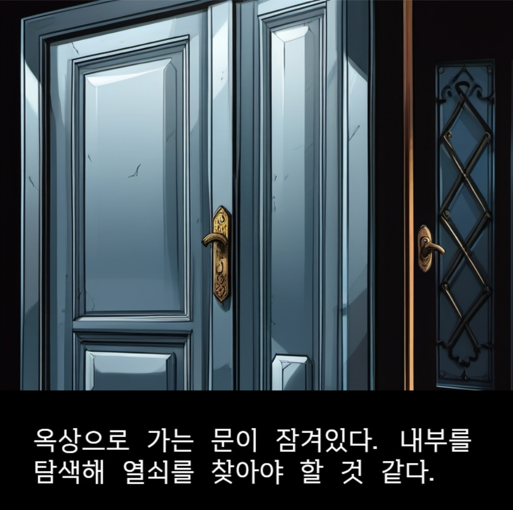
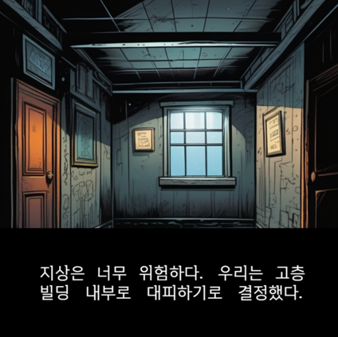
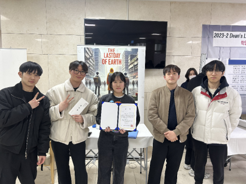
Problem Definition
게임은 기능 구현뿐 아니라 배경, 캐릭터, 장면 이미지가 몰입감을 결정합니다. 하지만 디자이너가 없는 소규모 팀에서는 장면마다 필요한 이미지를 직접 제작하는 데 많은 시간과 비용이 필요했습니다.
선택지마다 다른 배경과 상황을 보여주어야 하므로, 단순한 UI보다 많은 그래픽 리소스가 필요했습니다. 직접 제작하거나 외부 리소스를 찾는 방식만으로는 짧은 프로젝트 기간 안에 완성도가 떨어질 수 있었습니다.
Stable Diffusion과 Playground를 활용해 스토리 장면에 맞는 이미지를 생성하고, 생성 결과를 선별해 Pygame 화면 구성에 맞게 적용하는 방향으로 문제를 재정의했습니다.
AI 이미지 생성 모델을 제작 파이프라인에 넣어 소규모 팀의 제작 한계를 줄이는 것이 핵심 목표였습니다.
Game Concept
게임의 배경은 거대한 태풍이 몰려온 재난 상황입니다. 플레이어는 대피 과정에서 여러 선택지를 만나고, 각 선택에 따라 다른 장면과 결과를 경험합니다.
위험한 지상 상황에서 어디로 이동할지 선택하며 생존 가능성을 판단하는 경로입니다.
건물 안에서 옥상, 내부 공간, 대피로를 탐색하며 다른 선택지를 경험하는 경로입니다.
간단한 조작으로 스토리를 따라가되, 선택에 따라 다른 장면으로 이동하도록 구성했습니다.
태풍과 침수 상황을 배경 이미지와 텍스트로 보여줍니다.
플레이어가 이동 방향이나 행동을 선택합니다.
클릭 좌표와 페이지 함수에 따라 다음 화면으로 이동합니다.
선택의 누적 결과에 따라 생존 또는 실패 장면으로 이어집니다.
Storyboard Design
무작정 이미지를 생성하지 않고, 페이지 번호, 상황 설명, 필요한 배경, 텍스트, 선택지를 먼저 정리했습니다. 이 스토리보드는 팀원이 같은 장면을 이해하고 AI 이미지 생성과 Pygame 구현을 병렬로 진행하기 위한 기준이 되었습니다.
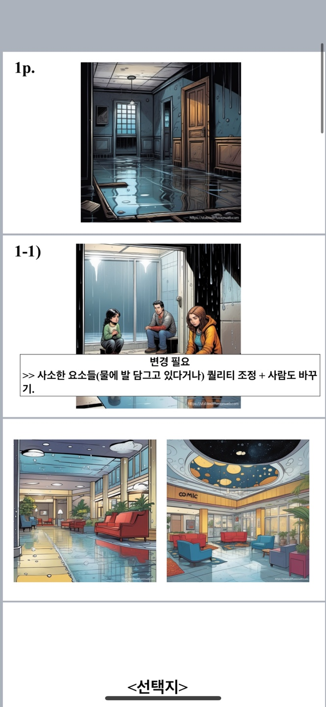
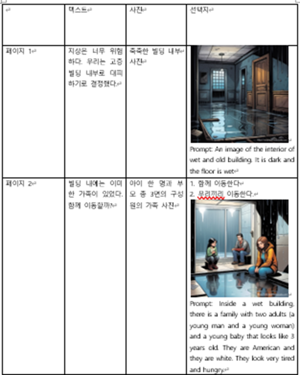
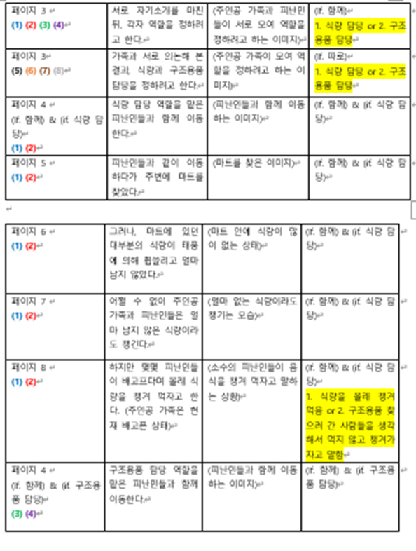
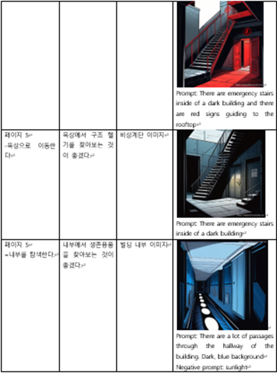
AI Image Generation
스토리 장면에 필요한 배경과 인물 이미지를 생성하기 위해 Prompt, Negative Prompt, 스타일 옵션을 반복 조정했습니다. Stable Diffusion에서 부족한 결과는 Playground로 보완하며 여러 플랫폼의 장단점을 비교했습니다.
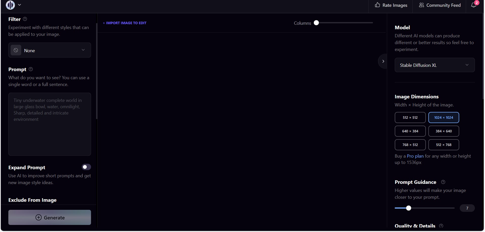
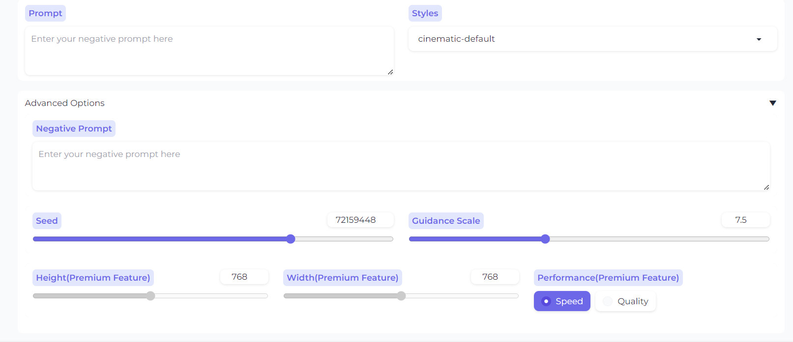
태풍, 침수, 어두운 건물 내부, 긴박한 대피 상황처럼 장면의 핵심 단어를 넣어 생성 방향을 좁혔습니다.
장면과 맞지 않는 물체, 어색한 인물 표현, 과도한 디테일을 줄이기 위해 제외 조건을 함께 설정했습니다.
sai-comic book style 등 스타일 옵션을 활용해 장면 간 분위기가 너무 크게 흔들리지 않도록 조정했습니다.
Character Consistency Design
AI로 장면 이미지를 바로 생성하면 영상마다 캐릭터의 얼굴, 의상, 성격이 달라지거나 주요 인물보다 엑스트라가 더 두드러지는 문제가 있었습니다. 이를 단순히 프롬프트를 반복 수정하는 방식으로 해결하지 않고, 스토리 분석을 바탕으로 캐릭터의 설정과 시각적 기준을 먼저 정의한 뒤 장면 이미지를 생성하는 제작 프로세스를 설계했습니다.
Character Bible
게임의 주요 등장인물은 엄마, 아빠, 누나, 남동생, 여동생으로 구성된 다섯 명의 가족 캐릭터입니다. 각 인물이 장면마다 다른 사람처럼 표현되지 않도록 외형뿐 아니라 성격, 특기, 지능, 탐구력, 가족 내 역할과 행동 방식을 캐릭터 설정표로 정리했습니다.
예를 들어 탐구력이 높은 캐릭터는 재난 상황에서 주변을 먼저 관찰하고 단서를 확인하도록 설정하고, 행동력이 높은 캐릭터는 가족의 이동을 주도하도록 정의했습니다. 이후 이미지 생성 프롬프트마다 해당 배역의 설정을 고정 정보로 포함해, 장면이 달라져도 캐릭터가 스토리에 맞는 일관된 행동과 표정을 보이도록 했습니다.
엄마, 아빠, 누나, 남동생, 여동생의 가족 내 역할 정의
성격, 감정 표현 방식, 위기 상황에서의 반응 고정
특기, 지능, 탐구력 등 스토리 전개에 영향을 주는 특성 설정
얼굴형, 헤어스타일, 의상, 연령대 등 외형 기준 고정
Reference Generation
같은 캐릭터라도 정면 이미지에서 단순히 “인물을 45도로 돌려 달라”고 지시하면 얼굴형과 이목구비가 달라지는 문제가 있었습니다. 이를 줄이기 위해 먼저 각 캐릭터의 정면 이미지를 생성하고, 정면 이미지를 기준 레퍼런스로 사용했습니다.
이후 캐릭터 자체를 회전시키는 방식이 아니라, 관찰자와 캐릭터의 상대적인 위치를 설명하는 방식으로 시점을 정의했습니다.
다른 관찰자가 이 캐릭터의 오른쪽 45도 위치에 서 있을 때 보이는 모습을 그려 주세요. 정면 이미지와 동일한 얼굴형, 머리 모양, 의상과 고유 특징을 유지해 주세요.
이와 같은 프롬프트를 사용해 오른쪽 45도 시점의 이미지를 생성하고, 정면 이미지와 얼굴·의상·특징이 일치하는 결과만 선별했습니다. 이 작업을 다섯 명의 가족 캐릭터에게 각각 적용해, 장면의 카메라 시점이 달라져도 동일한 인물로 인식할 수 있는 캐릭터별 레퍼런스 세트를 구축했습니다.
Prompt Structure
프롬프트는 모든 장면에서 유지해야 하는 고정 정보와 장면에 따라 바뀌는 가변 정보로 나누어 작성했습니다. 이를 통해 새로운 장면을 생성할 때도 캐릭터의 핵심 설정이 누락되지 않도록 했습니다.
캐릭터 이름, 가족 내 역할, 얼굴형, 헤어스타일, 의상, 성격, 특기, 지능, 탐구력
현재 행동, 표정, 시선, 자세, 다른 인물과의 관계, 카메라 위치, 배경과 조명
얼굴 왜곡, 다른 의상, 과도한 그림자, 비대칭적인 눈, 불필요한 인물 추가, 캐릭터 특징 변경
승인된 캐릭터 이미지는 이후 장면 생성의 기준 이미지로 다시 사용했습니다. 영상이 연결되는 경우에는 이전 장면의 마지막 프레임을 다음 장면의 시작 기준으로 활용해, 이미지뿐 아니라 장면 전환에서도 인물과 공간의 연속성이 유지되도록 했습니다.
여러 명의 엑스트라가 등장하는 장면에서는 생성 모델이 각 인물의 얼굴과 의상을 개별적으로 묘사하면서 화면이 복잡해지고, 주요 가족 캐릭터의 얼굴이 변형되거나 시선이 분산되는 문제가 발생했습니다.
스토리에서 엑스트라는 배경 상황을 전달하는 역할이므로, 세부적인 얼굴과 의상을 표현하지 않고 사람의 형체만 알아볼 수 있는 그림자 또는 실루엣으로 생성하도록 프롬프트를 설계했습니다. 엑스트라의 크기와 명암도 주요 인물보다 낮게 설정해, 등장인물의 수가 많아도 관객의 시선이 가족 캐릭터와 핵심 사건에 집중되도록 장면의 시각적 우선순위를 조절했습니다.
생성 결과에 문제가 생겼을 때 여러 조건을 동시에 수정하면 어떤 변화가 결과에 영향을 주었는지 판단하기 어려웠습니다. 따라서 캐릭터 시점, 표정, 행동, 조명, 카메라 움직임과 같은 요소를 한 번에 하나씩 변경하며 결과를 비교했습니다.
캐릭터 설정표, 정면·45도 레퍼런스, 고정 프롬프트 정보와 엑스트라 표현 규칙을 사전에 설계한 결과, 다섯 명의 가족 캐릭터가 여러 장면에서도 동일한 외형과 성격을 유지하도록 개선할 수 있었습니다.
이 경험을 통해 생성형 AI의 품질은 긴 프롬프트를 작성하는 것만으로 높아지는 것이 아니라, 스토리에 필요한 정보를 먼저 구조화하고, 모델이 반복해서 참고할 기준과 검증 과정을 설계할 때 안정적으로 확보할 수 있음을 배웠습니다.
엄마, 아빠, 누나, 남동생, 여동생의 외형과 성격, 특기, 지능, 탐구력을 사전에 정의했습니다.
장면별 이미지 생성에서 외형이 달라지지 않도록 캐릭터별 기준 이미지를 제작했습니다.
관찰자의 상대 위치를 구체적으로 설명해 동일한 캐릭터의 45도 이미지를 생성했습니다.
비중이 낮은 엑스트라는 그림자 형태로 단순화해 주요 가족 캐릭터에 시선이 집중되도록 했습니다.
캐릭터의 외형·성격은 고정하고, 행동·표정·카메라 조건만 장면별로 변경했습니다.
Pygame Implementation
게임은 Python Pygame으로 구현했습니다. 각 화면은 배경 이미지, 텍스트 이미지, 선택지 이미지로 구성하고, 사용자가 클릭한 좌표에 따라 다음 페이지 함수로 이동하도록 설계했습니다.
배경, 텍스트, 선택지 이미지를 Pygame 화면 크기에 맞춰 불러옵니다.
각 장면을 하나의 page 함수로 나누어 화면 흐름을 관리했습니다.
선택지 영역의 좌표를 감지하고 다음 장면으로 전환했습니다.
선택 결과에 따라 지상 대피 또는 건물 대피 흐름으로 이어지게 했습니다.
Gameplay Flow
플레이어는 먼저 장면 이미지를 보고, 텍스트를 읽은 뒤 선택지를 클릭합니다. 선택 후에는 다음 장면으로 이동하며, 두 개의 테마 흐름이 병렬로 개발되었습니다.
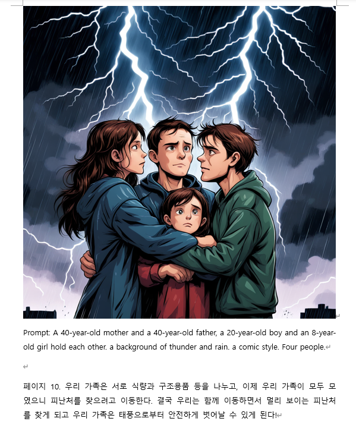
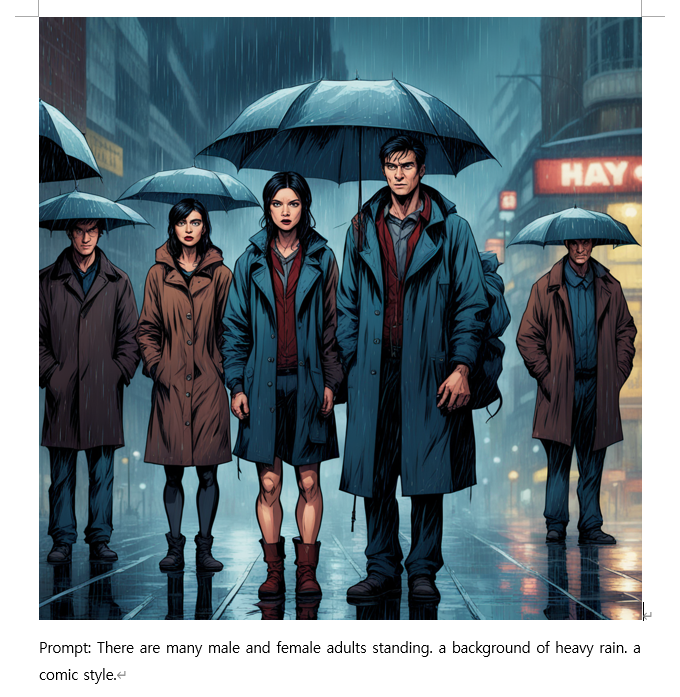
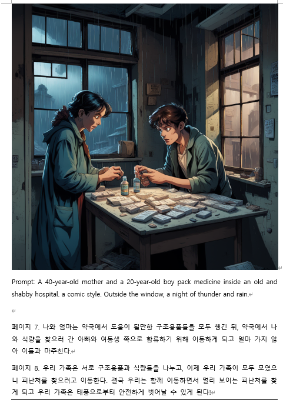
Collaboration
팀원 5명이 스토리 구성, AI 이미지 생성, 게임 구현 역할을 나누어 진행했습니다. 저는 조장으로 아이디어를 정리하고 역할을 배분했으며, Pygame 화면 전환 로직과 클릭 이벤트 구현을 맡아 최종 결과물이 하나의 게임으로 이어지도록 정리했습니다.
Result
이 프로젝트는 AI 이미지 생성 모델을 단순 실험에 그치지 않고, 스토리보드와 Pygame 구현을 거쳐 플레이 가능한 게임 결과물로 연결한 경험입니다. 결과물은 교내 공학설계입문 작품전시회에서 소개되었고 우수상을 수상했습니다.
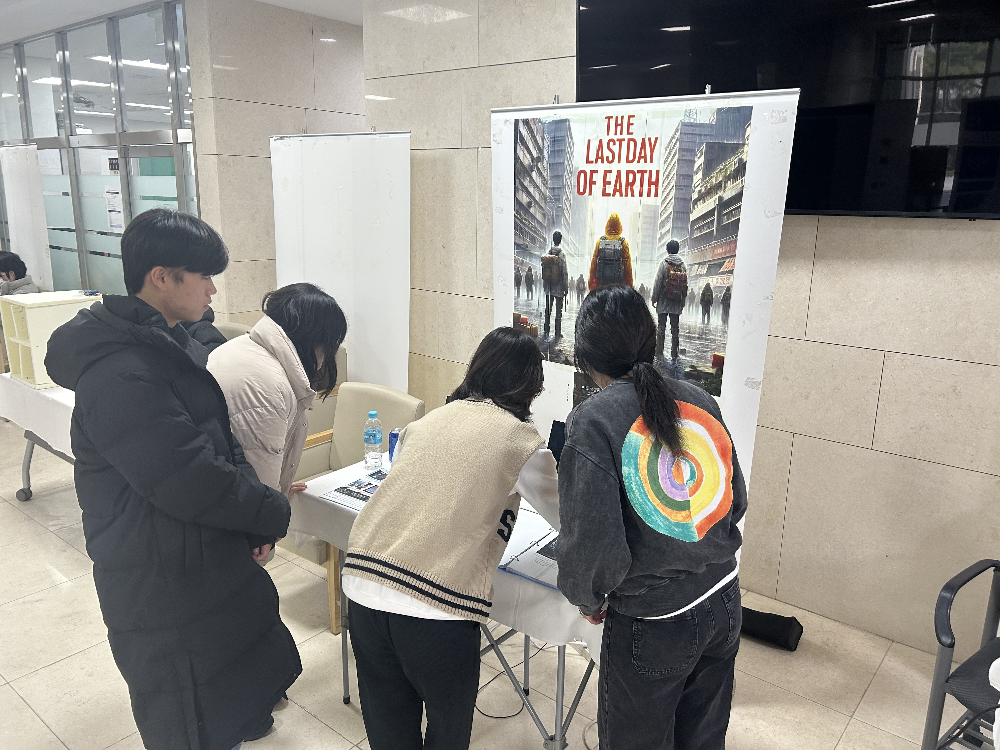
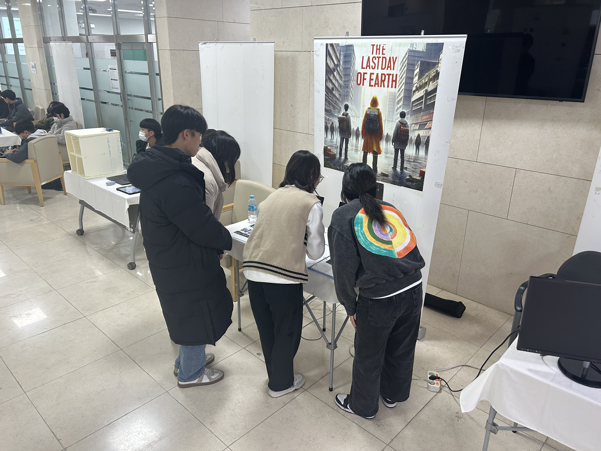
AI가 이미지를 빠르게 만들어주더라도 게임에 바로 사용할 수 있는 것은 아니었습니다. 프로젝트를 통해 프롬프트 설계, 결과물 선별, 화면 비율 조정, 스토리 흐름과의 연결이 실제 완성도에 큰 영향을 준다는 점을 배웠습니다.